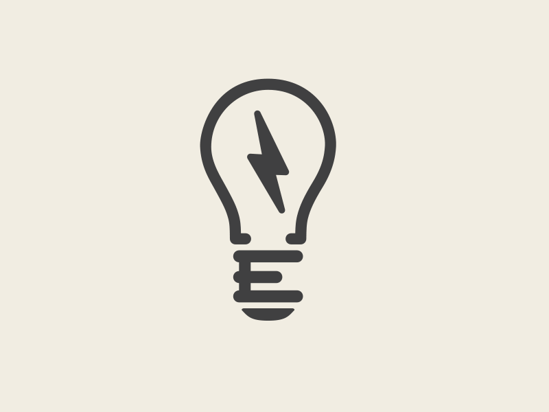

SISTEMAS DE ADQUISICIÓN E INSTRUMENTACIÓN CIENTÍFICA
Our Sensor
José, Iván y Alexandra
¿Qué hemos hecho?
Sistema multisensor
- Sensor de Luz
- Sensor de Temperatura

Arduino
- Pin 18 selección
- Pin 47 flanco de bajada (leer el dato)
¿Qué hacemos con la información?
Transmisión de datos
- Servidor web
- Transceiver
- Visualización en el display
Recepción de datos
- Plataforma web
- Pantalla del Transceiver
- Visualización en el display (binario a código ASCII)
¡Gracias por su atención!